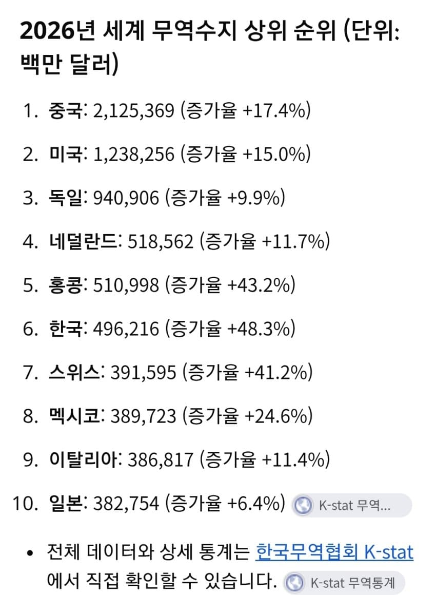
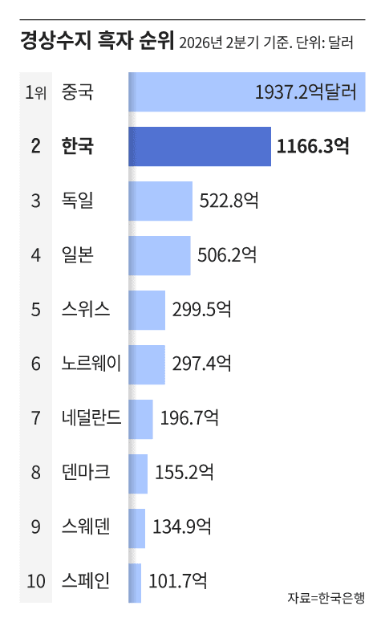
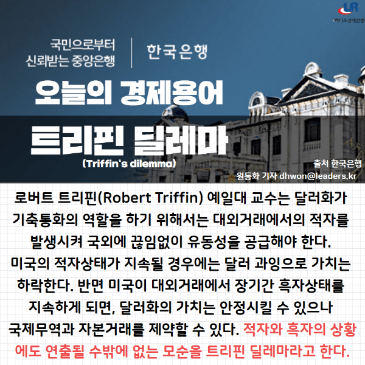
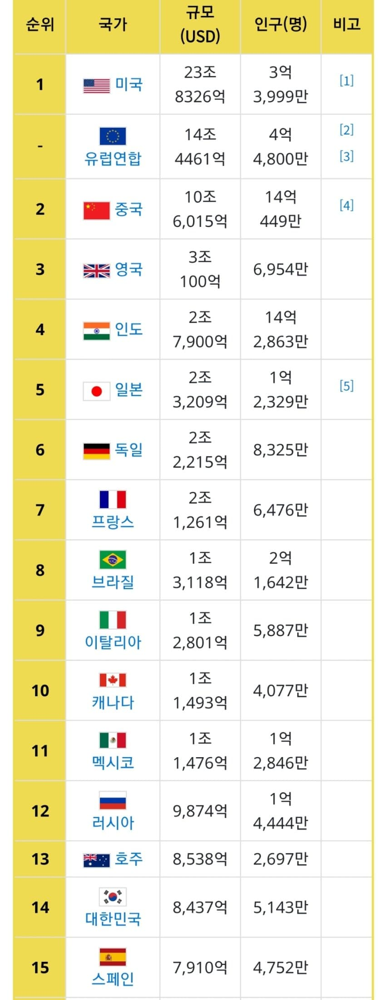
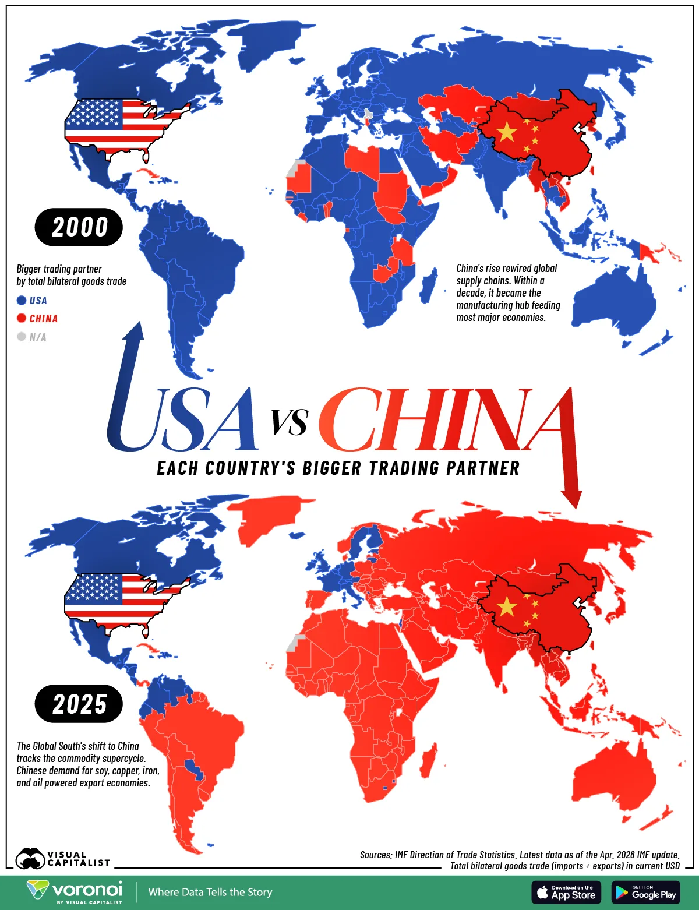
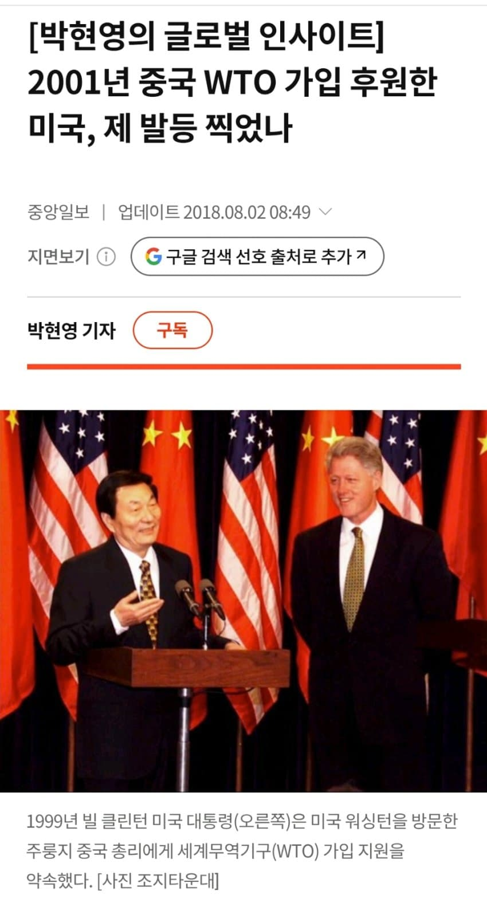
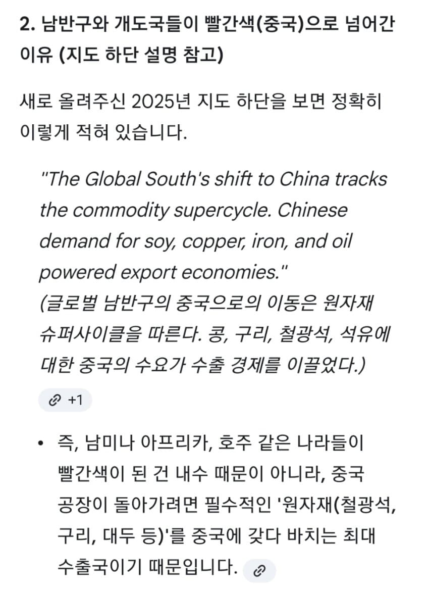
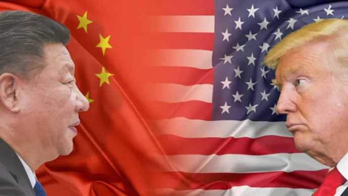
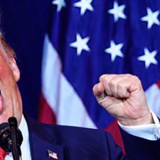

1. 중국은 수출국가다
요 몇년간 어떤 달팽이가 정권 잡고 독재 피자
중국 내수가 우루루 무너짐
안그래도 중국은 철저히 수출로 먹고 사는 나라인데
이를 더 심화 시킨거

2. 트레핀 딜레마
기축통화가 되면 싫어도 겪는게 무역적자임
즉, 위안화가 진짜 달러 밀어내고
기축통화 되는 순간
지금 중국 체급으로는 무역적자를 못 견뎌서 박살남

3. 내수
"그럼 미국은 어떻게 버티냐?"
바로 막대한 내수시장 덕분임
지네 종이쪼가리(달러)를 주고
다른나라의 물건을 쇼핑하듯 쓸어담고 소비해줌
그리고 그 종이쪼가리는 다시 미국 국채 매입이나
투자 등으로 다시 미국에 돌아가기 때문에
무역적자를 내면서도 경제와 패권을 다 유지 하는
사기적인 순환구조가 완성 됨
근데 중국은 이게 안됨
위안화가 기축통화가 돼바야
미국처럼 중국도 거대한 무역적자를 감수하며
전 세계 물건을 사주고 소비 해야 하는데
중국은 내수 시장이 미국만큼 받쳐주지 못함

미중패권 얘기하면 꼭 나오는 미중 무역지도가 있음
보면 중국과 거래하는 나라가 더 많아져서
중국이 미국 넘고 있다는 근거로 쓰이는데
이건 착시가 있음
진실은 빌 클린턴 병신이 중국이 경제가 발전하면
배부른 국민들이 정치에 간섭할려 할거고
이는 분명 공산당의 붕괴와
민주주의 국가가 될거라고 믿고
중국의 WTO 가입 반대하는 공화당 의원들까지
일일이 설득까지해서 중국을 세계 공장으로 만든거
(당연히 천안문 사태에서 보여주듯
중국은 민중 학살에 아무런 거부감이 없기에
들고 일어나면 땅크 밀고가서 쥐포로 만들어 진압함
그렇게 빌의 예상은 보기 좋게 빗나가서
지금은 미국 최악의 병신 짓 중 하나로 평가 받음)

그렇게 공장이 됐으니 이제 뭐가 필요할까?
물건 만들려면 재료가 있어야할거 아니노?
바로 그게 지도에서 빨간색이 파란색보다 많아진 이유임
중국이 세계의 공장이 되면서
지구상에 있는 온갖 원자재랑
중간재를 다 빨아들인거임
남반구고 개도국이고 자원 팔아먹으려면
세계의 공장인 중국한테 갈 수밖에 없으니까

실제 위 지도 하단에 적힌
영어 문장을 번역 하면
빨간색은 주로 중국에
원자재 팔이 한다고 적혀있음
여전히 미국과 무역을 더 많이 한다고 나온
서유럽은 애초에 내수가 한국 배로 크고 (요즘 맛탱이 갔다는 프랑스 혼자서 한국 내수 2.4배임)
또 원자재 팔이 보단 완제품,고부가 가치 산업등으로
무역을 하다보니 내수가 작은 중국보단
내수가 큰 미국과 무역을 더 자주 할 수 밖에 없는거

요약
위안화가 기축통화 되면 중국 체급(내수)으론 무역적자 못 버티고 망함
패권국이 될려면 내수를 최소 지금의 3배 이상 키워서 미국보다 커져야함
현실은 미국 내수의 반도 안되는 44%따리
달러패권 무너질거 같으면 진핑이가 젤 먼저 부랄 덜렁거리며 백악관 달려감
댓글
수집 당시 댓글 419개
· ㅇㅇ · 11.05 10:02:36
· ㅇㅇ · 11.05 13:05:23
· ㅇㅇ · 11.05 13:48:16
ㅇㅇ · 11.05 09:44:34
삭제됨 · 11.05 09:44:52
· ㅇㅇ · 11.05 09:45:35
ㅇㅇ · 11.05 09:49:32
· ㅇㅇ · 11.05 11:33:32
· 00 · 11.05 15:06:47
ㅇㅇ · 11.05 09:53:51
· ㅇㅇ · 11.05 09:58:16
· ㅇㅇ · 11.05 09:59:58
ㅇㅇ · 11.05 09:57:41
ㅇㅇ · 11.05 10:00:36
· ㅇㅇ · 11.05 10:09:40
· ㅇㅇ · 11.05 10:11:18
ㅇㅇ · 11.05 10:03:02
· ㅇㅇ · 11.05 10:04:14
· ㅇㅇ · 11.05 10:12:33
· ㅇㅇ · 11.05 10:14:05
· ㅇㅇ · 11.05 11:03:22
· ㅇㅇ · 11.05 19:47:39
ㅇㅇ · 11.05 10:06:07
· ㅇㅇ · 11.05 10:09:55
· ㅇㅇ · 11.05 10:58:02
· ㅇㅇ · 11.05 10:59:34
· ㅇㅇ · 11.05 11:28:49
ㅇㅇ · 11.05 10:09:19
ㅇㅇ · 11.05 10:12:19
ㅇㅇ · 11.05 10:14:42
· 카포루 · 11.05 13:41:27
ㅇㅇ · 11.05 10:15:15
ㅇㅇ · 11.05 10:18:22
ks910204 · 11.05 10:21:41
· ㅇㅇ · 11.05 10:32:23
ㅇㅇ · 11.05 10:32:58
ㅇㅇ · 11.05 10:33:41
· ㅇㅇ · 11.05 10:36:52
· ㅇㅇ · 11.05 15:03:28
Dd · 11.05 10:35:29
ㅇㅇ · 11.05 10:54:45
ㅁㅇㄻㄹ · 11.05 10:58:23
ㅇㅇ · 11.05 10:58:41
· ㅇㅇ · 11.05 11:08:40
ㅇㅇ · 11.05 11:08:30
ㅇㅇ · 11.05 11:10:06
· 디디다 · 11.05 12:05:24
· 디디다 · 11.05 12:07:47
· 디디다 · 11.05 12:09:37
ㅇㅇ · 11.05 11:14:24
· ㅇㅇ · 11.05 12:43:36
ㅇㅇ · 11.05 11:16:30
ㅇㅇ · 11.05 11:39:56
실베 망상글
· ㅇㅇ · 11.05 11:40:11

· ㅇㅇ · 11.05 12:30:36
ㅇㅇ · 11.05 11:43:22
· ㅇㅇ · 11.05 14:36:00
· ㅇㅇ · 11.05 15:16:00
· ㅇㅇ · 11.05 23:23:49
디디다 · 11.05 12:08:22
ㅇㅇ · 11.05 12:11:58
· 디디다 · 11.05 12:29:03
· ㅇㅇ · 11.05 12:35:25
ㅇㅇ · 11.05 12:22:09
ㅇㅇ · 11.05 12:23:27
ㅇㅇ · 11.05 12:29:46
ㅇㅇ · 11.05 12:29:56
ㅇㅇ · 11.05 12:31:39
· ㅇㅇ · 11.05 14:09:01
ㅇㅇ · 11.05 12:33:25
ㅇㅇ · 11.05 12:45:10
ㅇㅇ · 11.05 13:08:50
o o · 11.05 13:14:28
ㅇㅇ · 11.05 13:51:49
ㅇㅇ · 11.05 14:17:17
ㅇㅇ · 11.05 14:25:16
ㅇㅇ · 11.05 14:29:53
ㅇㅇ · 11.05 14:32:38
· ㅇㅇ · 11.05 14:32:48
· ㅇㅇ · 11.05 14:33:11
· ㅇㅇ · 11.05 14:33:23
· ㅇㅇ · 11.05 14:33:32
· ㅇㅇ · 11.05 14:33:43
· ㅇㅇ · 11.05 14:38:35
ㅇㅇ · 11.05 14:33:25
· ㅇㅇ · 11.05 16:36:58
ㅇㅇ · 11.05 14:33:59
ㅇㅇ · 11.05 14:34:16
ㅇㅇ · 11.05 14:35:07
· ㅇㅇ · 11.05 14:35:13
ㅇㅇ · 11.05 14:43:35
ㅇㅇ · 11.05 15:14:37
qkfpt · 11.05 15:38:08
· qkfpt · 11.05 15:38:21
ㅇㅇ · 11.05 16:03:18
필기구 · 11.05 16:16:28
ㅇㅇ · 11.05 16:26:24
환란 전 교회 휴거 · 11.05 23:35:03
ㅇㅇ · 11.06 18:55:08
JungNu · 11.06 19:32:58
· ㅇㅇ · 11.05 08:24:00
ㅇㅇ · 11.05 08:31:50
ㅇㅇ · 11.05 08:34:33
· ㅇㅇ · 11.05 08:35:52
· ㅇㅇ · 11.05 08:37:36
· ㅇㅇ · 11.05 09:03:27
· ㅇㅇ · 11.05 11:35:00
ㅇㅇ · 11.05 08:35:15
ㅇㅇ · 11.05 08:36:08
· ㅇㅇ · 11.05 09:03:41
ㅇㅇ · 11.05 08:38:44
ㅇㅇ · 11.05 08:45:59
· ㅇㅇ · 11.05 09:01:32
ㅇㅇ · 11.05 08:47:14
· ㅇㅇ · 11.05 08:47:49
· ㅇㅇ · 11.05 08:49:17
· ㅇㅇ · 11.05 08:50:24
· ㅇㅇ · 11.05 08:50:38
· ㅇㅇ · 11.05 08:51:07
ㅇㅇ · 11.05 08:49:13
· ㅇㅇㄴㄴ · 11.05 09:08:00
ㅇㅇ · 11.05 08:49:31
ㅇㅇ · 11.05 08:49:45
ㅇㅇ · 11.05 08:50:19
ㅇㅇ · 11.05 08:50:55
펜도르 · 11.05 08:50:56
. · 11.05 08:51:18
ㅇㅇ · 11.05 08:51:42
ㅇㅇ · 11.05 08:53:16
ㅇㅇ · 11.05 08:58:19
ㅇㅇ · 11.05 08:58:44
· ㅇㅇ · 11.05 09:12:19
ㅇㅇ · 11.05 08:59:11
ㅇㅇ · 11.05 09:00:47
씹덕1006일차 · 11.05 09:04:22
· 씹덕1006일차 · 11.05 09:04:30
asdfqwer · 11.05 09:06:15
· asdfqwer · 11.05 09:06:35
· asdfqwer · 11.05 09:07:01
ㅇㅇ · 11.05 09:06:25
주갤럼 · 11.05 09:12:05
ㅇㅇ · 11.05 09:12:24
ㅇㅇ · 11.05 09:13:59
ㅇㅇ · 11.05 09:15:30
ㅇㅇ · 11.05 09:15:59
ㅇㅇ · 11.05 09:16:49
· ㅇㅇ · 11.05 09:19:35
ㅇㅇ · 11.05 09:19:56
ㅇㅇ · 11.05 09:20:23
ㅇㅇ · 11.05 09:22:36
· ㅇㅇ · 11.05 09:23:12
· ㅇㅇ · 11.05 09:23:56
· ㅇㅇ · 11.05 09:26:27
· ㅇㅇ · 11.05 09:30:36
· ㅇㅇ · 11.05 10:17:25
· ㅇㅇ · 11.05 10:38:08
· ㅇㅇ · 11.05 11:50:48
· ㅇㅇ · 11.05 12:07:01
· ㅇㅇ · 11.05 12:25:25
· ㅇㅇ · 11.05 14:37:11
· ㅇㅇ · 11.05 14:37:24
ㅇㅇ · 11.05 09:28:50
ㅇㅇ · 11.05 09:29:54
· ㅇㅇ · 11.05 09:32:58
ㅇㅇ · 11.05 09:30:02
· ㅇㅇ · 11.05 09:31:48
· ㅇㅇ · 11.05 09:33:16
· ㅇㅇ · 11.05 09:34:25
· ㅇㅇ · 11.05 09:35:21
· ㅇㅇ · 11.05 09:38:56
· ㅇㅇ · 11.05 09:39:58
· ㅇㅇ · 11.05 09:41:04
· ㅇㅇ · 11.05 09:41:49
· ㅇㅇ · 11.05 09:42:15
· ㅇㅇ · 11.05 09:43:04
· ㅇㅇ · 11.05 09:45:05
· ㅇㅇ · 11.05 09:47:45
· ㅇㅇ · 11.05 09:50:12
· ㅇㅇ · 11.05 09:54:02
· ㅇㅇ · 11.05 09:56:47
· ㅇㅇ · 11.05 10:03:28
· ㅇㅇ · 11.05 10:12:42
· ㅇㅇ · 11.05 10:14:20
· 금향 · 11.05 10:32:47
· ㅇㅇ · 11.05 10:39:07
· ㅇㅇ · 11.05 10:43:42
· ㅇㅇ · 11.05 10:44:55
· ㅇㅇ · 11.05 12:42:25
꾸닝 · 11.05 09:34:46
· ㅇㅇ · 11.05 14:36:24
ㅇㅇ · 11.05 09:36:16
· ㅇㅇ · 11.05 09:48:21
· ㅇㅇ · 11.05 12:44:25
ㅇㅇ · 11.05 09:38:40
실베현자 · 11.05 09:39:05
· 실베현자 · 11.05 09:39:31
· 실베현자 · 11.05 09:39:49
· ㅌㅌ · 11.05 10:01:24
· ㅇㅇ · 11.05 11:36:18
ㅇㅇ · 11.05 09:39:27
· ㅇㅇ · 11.05 10:48:58
· ㅇㅇ · 11.05 10:52:35
· ㅇㅇ · 11.05 11:35:14
· ㅇㅇ · 11.05 11:56:41
· ㅇㅇ · 11.05 13:46:08
· ㅇㅇ · 11.05 14:11:38
· ㅇㅇ · 11.05 17:23:15
· ㅇㅇ · 11.05 22:55:01
ㅇㅇ · 11.03 16:33:05
· ㅇㅇ · 11.03 16:36:07
· ㅇㅇ · 11.03 16:36:14
· ㅇㅇ · 11.03 16:36:18
· ㅇㅇ · 11.03 16:42:18
· ㅇㅇ · 11.03 16:44:15
· ㅇㅇ · 11.03 16:46:19
· ㅇㅇ · 11.03 16:56:31
· ㅇㅇ · 11.03 19:33:39
· ㅇㅇ · 11.05 07:43:41
· ㅇㅇ · 11.05 07:54:35
· ㅇㅇ · 11.05 08:47:13
ㅇㅇ · 11.03 16:37:30
· ㅇㅇ · 11.03 16:38:50
· ㅇㅇ · 11.03 17:05:03
· ㅇㅇ · 11.03 18:55:55
· ㅇㅇ · 11.05 09:13:53
ㅇㅇ · 11.03 16:39:05
· ㅇㅇ · 11.03 16:44:37
· ㅇㅇ · 11.03 17:27:35
ㅇㅇ · 11.03 16:45:16
한석중 · 11.03 16:46:34
ㅇㅇ · 11.03 16:48:53
· ㅇㅇ · 11.03 17:22:13
· ㅇㅇ · 11.03 19:50:25
· 트란잠 · 11.05 07:37:37
ㅇㅇ · 11.03 16:49:04
ㅇㅇ · 11.03 17:01:01
범성애자적마인드 · 11.03 17:20:27
· ㅇㅇ · 11.03 17:42:30
· ㅇㅇ · 11.04 03:32:15
· ㅇㅇ · 11.05 08:49:21
· ㅇㅇ · 11.05 09:18:26
ㅇㅇ · 11.03 17:26:23
ㅇㅇ · 11.05 07:31:08
ㅇㅇ · 11.05 07:34:30
dd · 11.05 07:34:50
· fancyha0102 · 11.05 08:02:03
ㅇㅇ · 11.05 07:35:41
Honsound · 11.05 07:36:27
ㅇㅇ · 11.05 07:37:49
· ㅇㅇ · 11.05 08:03:08
ㅇㅇ · 11.05 07:38:43
· ㅇㅇ · 11.05 08:12:05
· ㅇㅇㅇ · 11.05 08:54:28
ㅇㅇ · 11.05 07:39:53
ㅇㅇ · 11.05 07:40:07
· ㅇㅇ · 11.05 07:41:08
· ㅇㅇ · 11.05 07:45:00
· ㅇㅇ · 11.05 08:04:54
· ㅇㅇ · 11.05 08:24:21
· ㅇㅇ · 11.05 11:33:01
· ㅇㅇ · 11.05 17:30:22
ㅇㅇ · 11.05 07:40:34
ㅇㅇ · 11.05 07:42:08
ㅇㅇ · 11.05 07:42:29
ㅇㅇ · 11.05 07:42:59
ㅇㅇ · 11.05 07:44:07
ㅇㅇ · 11.05 07:45:01
ㅇㅇ · 11.05 07:46:32
ㅇㅇ · 11.05 07:47:31
ㅇㅇ · 11.05 07:47:48
ㅇㅇ · 11.05 07:50:06
· ㅇㅇ · 11.05 14:37:47
ㅇㅇ · 11.05 07:52:28
ㅇㅇ · 11.05 07:53:22
· ㅇㅇ · 11.05 08:12:11
· ㅇㅇ · 11.05 08:52:47
· ㅇㅇ · 11.05 10:44:33
· ㅇㅇ · 11.05 12:58:48
ㅇㅇ · 11.05 07:53:37
· ㅇㅇ · 11.05 07:57:43
ㅇㅇ · 11.05 07:54:59
식물빌런 · 11.05 07:55:23
ㅇㅇ · 11.05 07:58:39
2456778 · 11.05 08:03:25
ㅇㅇ · 11.05 08:04:26
· ㅇㅇ · 11.05 14:36:35
ㅇㅅㅇ · 11.05 08:04:34
ㅇㅇ · 11.05 08:04:38
00 · 11.05 08:08:13
· 00 · 11.05 08:12:19
ㅇㅇ · 11.05 08:08:58
ㅇㅇ · 11.05 08:09:19
ㅇㅇ · 11.05 08:11:51
ㅇㅇ · 11.05 08:14:11
ㅇㅇ · 11.05 08:14:18
ㅇㅇ · 11.05 08:18:06
· ㅇㅇ · 11.05 08:18:41
ㅇㅇ · 11.05 08:18:29
ㅇㅇ · 11.05 08:18:57
ㅇㅇ · 11.05 08:23:55
· ㅇㅇ · 11.05 22:36:07
ㅇㅇ · 11.03 16:31:40
· ㅇㅇ · 11.03 16:34:07
· ㅇㅇ · 11.03 16:39:28
· ㅇㅇ · 11.03 16:41:50
· ㅇㅇ · 11.03 16:43:01
· ㅇㅇ · 11.03 16:52:33
· ㅇㅇ · 11.03 17:08:06
· ㅇㅇ · 11.03 17:13:22
· ㅇㅇ · 11.03 17:15:45
· ㅇㅇ · 11.03 17:16:56
· ㅇㅇ · 11.03 17:20:31
· ㅇㅇ · 11.03 17:22:18
· ㅇㅇ · 11.03 17:22:22
· ㅇㅇ · 11.03 17:23:23
· ㅇㅇ · 11.03 17:23:39
· ㅇㅇ · 11.03 17:24:42
· ㅇㅇ · 11.03 17:24:43
· ㅇㅇ · 11.03 17:25:29
· ㅇㅇ · 11.03 17:25:47
· ㅇㅇ · 11.03 17:26:11
· ㅇㅇ · 11.03 17:26:52
· ㅇㅇ · 11.03 17:27:24
· ㅇㅇ · 11.03 17:27:35
· ㅇㅇ · 11.03 17:28:21
· ㅇㅇ · 11.03 17:28:22
· ㅇㅇ · 11.03 17:30:01
· ㅇㅇ · 11.03 17:30:16
· ㅇㅇ · 11.03 17:31:13
· ㅇㅇ · 11.03 17:32:40
· ㅇㅇ · 11.03 17:32:56
· ㅇㅇ · 11.03 17:33:06
· ㅇㅇ · 11.03 17:34:15
· ㅇㅇ · 11.03 17:35:14
· ㅇㅇ · 11.03 17:35:42
· ㅇㅇ · 11.03 17:36:21
· ㅇㅇ · 11.03 17:37:16
· ㅇㅇ · 11.03 17:38:50
· ㅇㅇ · 11.03 17:40:20
· ㅇㅇ · 11.03 17:41:36
· ㅇㅇ · 11.03 17:42:31
· ㅇㅇ · 11.03 17:43:16
· 아우렐리온 · 11.03 17:43:57
· ㅇㅇ · 11.03 17:44:47
· ㅇㅇ · 11.03 17:45:51
· ㅇㅇ · 11.03 17:46:19
· ㅇㅇ · 11.03 17:47:14
· ㅇㅇ · 11.03 17:47:19
· ㅇㅇ · 11.03 17:47:59
· ㅇㅇ · 11.03 17:48:39
· ㅇㅇ · 11.03 17:50:29
· ㅇㅇ · 11.03 17:52:22
· ㅇㅇ · 11.03 17:52:56
· ㅇㅇ · 11.03 17:54:07
· ㅇㅇ · 11.03 17:54:52
애쓴다
· ㅇㅇ · 11.03 17:56:04
· ㅇㅇ · 11.03 17:56:27
· ㅇㅇ · 11.03 17:57:43
· ㅇㅇ · 11.03 17:59:02
· ㅇㅇ · 11.03 17:59:33
· ㅇㅇ · 11.03 18:01:53
· ㅇㅇ · 11.03 18:13:52
· ㅇㅇ · 11.03 18:15:34
· ㅇㅇ · 11.03 18:16:19
· ㅇㅇ · 11.03 18:17:07
· ㅇㅇ · 11.03 18:18:09
· ㅇㅇ · 11.03 18:18:54
· ㅇㅇ · 11.03 18:22:04
· ㅇㅇ · 11.03 18:22:27
· ㅇㅇ · 11.03 18:23:09
· ㅇㅇ · 11.03 18:23:57
· ㅇㅇ · 11.03 18:24:24
· ㅇㅇ · 11.03 18:25:13
· ㅇㅇ · 11.03 18:26:20
· ㅇㅇ · 11.03 18:27:40
· ㅇㅇ · 11.03 18:28:13
· ㅇㅇ · 11.03 18:28:29
· ㅇㅇ · 11.03 18:31:59
· ㅇㅇ · 11.03 18:33:20
· ㅇㅇ · 11.03 18:33:52
· ㅇㅇ · 11.03 18:35:22
· ㅇㅇ · 11.03 18:36:45
와 진짜
이해를
못하네
· ㅇㅇ · 11.03 18:38:54
· ㅇㅇ · 11.03 18:39:08
· ㅇㅇ · 11.03 18:40:32
반박은 했는데
니가 이해를 못함
· ㅇㅇ · 11.03 18:41:27
· ㅇㅇ · 11.03 18:42:32
· ㅇㅇ · 11.03 18:43:04
· ㅇㅇ · 11.03 18:47:19
· 우우우우우우우기 · 11.03 18:53:38
· ㅇㅇ · 11.03 19:21:47
· ㅇㅇ · 11.03 23:27:11
· ㅇㅇ · 11.03 23:36:22
· ㅇㅇ · 11.03 23:42:07
· ㅇㅇ · 11.03 23:46:44
· ㅇㅇ · 11.03 23:50:57
· ㅇㅇ · 11.04 01:51:55
· ㅇㅇ · 11.04 08:54:35
· ㅇㅇ · 11.05 07:58:32
· ㅇㅇ · 11.05 09:59:54
치킨 · 11.03 16:19:00
· ㅇㅇ · 11.03 16:20:56
눈이
없노?
· ㅇㅇ · 11.03 16:22:45
· ㅇㅇ · 11.03 16:41:22
· 무궁화꽃이 · 11.03 19:03:25
ㅇㅇ · 11.03 16:19:27
ㅇㅇ · 11.03 16:21:10
커다라타요 · 11.03 16:21:25
ㅇㅇ · 11.03 16:23:56
ㅇㅇ · 11.03 16:24:32
· ㅇㅇ · 11.03 16:35:40
· 하카라 · 11.03 16:36:33
· ㅇㅇ · 11.05 11:37:11
붕싱 · 11.03 16:25:06
· ㅇㅇ · 11.03 16:28:00
· ㅇㅇ · 11.03 17:25:50
· 모순 · 11.03 17:33:52
· ㅇㅇ · 11.05 08:55:25
· ㅇㅇ · 11.05 08:56:16